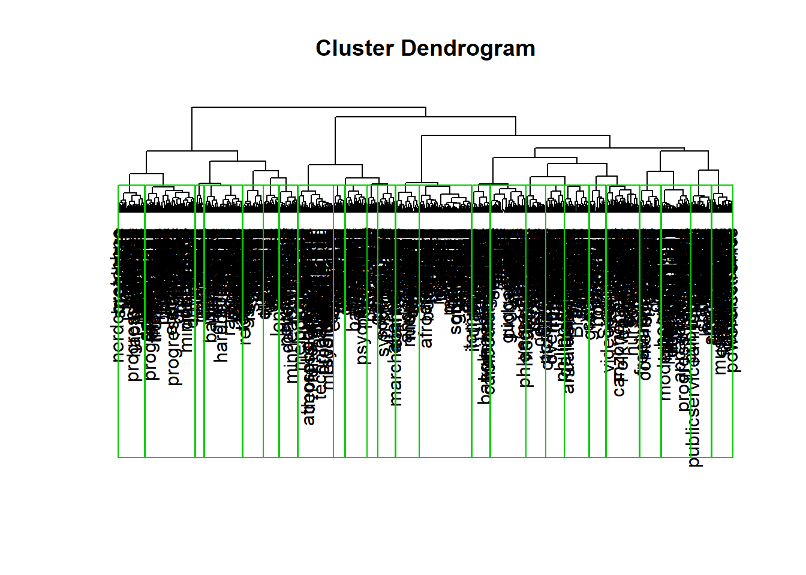
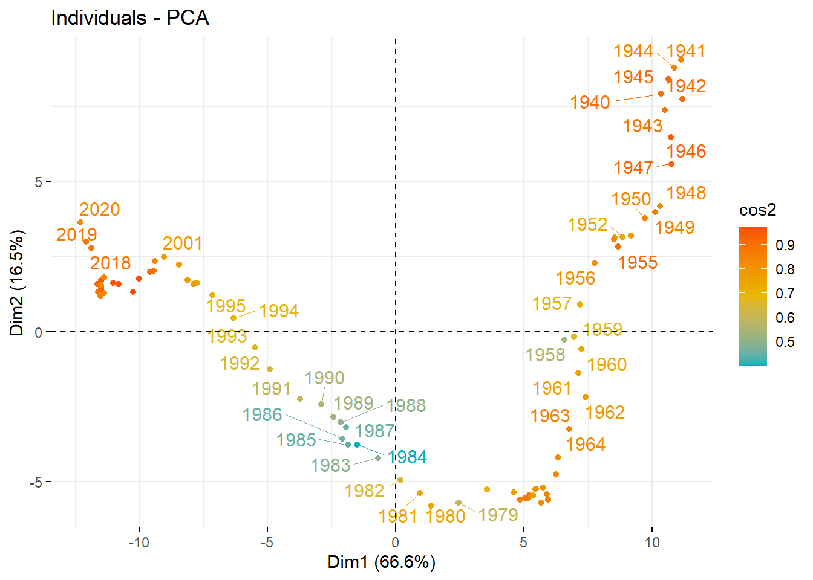

Originaux et rééditions, une dynamique de cycle de vie ?
Author
Affiliation
Christophe Benavent
Paris Dauphine - PSL
Published
January 25, 2023
1 Introduction
Dans cette étude on se concentre sur la question des styles. Le but est d’en donner un tableau général des évolutions et des variations. D’avoir quelques ordres de grandeurs en têtes, et de mieux cadrer les traitement ultérieurs qui porterons sur l’analyse de leurs cooccurences.
Code
#tools#packageslibrary(tidyverse)library(ggrepel)library(word2vec)library(doc2vec)library(fastcluster) #pour aller plus vite en hclibrary(Rtsne)library(scales)library(zoo)library(jtools)# pour ggplotbreaks =c(1900, 1910, 1920,1930,1940,1950,1960,1970,1980,1990,2000,2010,2020)# les couleurs des genres . Y-a-il une conventions ?col_genre<-c("blue4","coral4","skyblue","purple" , "darkturquoise","darkgreen","orange1","orange3","dodgerblue4","darkred","black","deeppink2","limegreen","red3","grey")col_format=c("brown4", "skyblue1", "skyblue2", "skyblue3","grey","cyan", "grey30")col_pays=c("black", "green3","green1","lightblue1", "yellow", "lightblue2", "orange1", "lightblue4", "dodgerblue3", "dodgerblue1", "dodgerblue2","green2","lightblue3", "white", "green4", "orange2", "orange3", "blue3", "blue4")theme_set(theme_minimal())
2 Préparation des données
Nours reprenons le fichier de l’étude précédente qui caractérise les releases, et nous chargeons celui des styles .
ggsave(filename="./images/genre13.jpeg", plot=last_plot(), width =27, height =18, units ="cm")
Cette première représentation est confuse, si le pop-rock domine, rien ne dit vraiment des tendances.
4 Vectorization
le but de la vectorization est de représenter chaque style, puis chaque édition, par un vecteur. Pour Augmenter l’information on va y ajouter les genres.
L’analyse est réduite au corpus des originaux pour saisir au plus prêt de la création les indications de style et pour une raison de calcul, on passe de 13 millions à 7 millions d’oeuvres dans le corpus.
On distingue genre et style par la majuscule.
Le calcul prend du temps, plusieurs heures sur 4 coeurs.
4.1 les styles
Le modèle Word2vec va nous permettre d’obtenir les embeddings des 603 styles identifiés et des 15 genres. On garde les majuscules pour identifier les genre, les styles ont été mis en minuscule auparavant.
Code
text1<-rbind(genre,style) %>%left_join(release)%>%filter(version=="Original") %>%select(id,title, pays2, date, style,category)vocab<-text1 %>%group_by(style)%>%summarise(n=n())text2<-text1 %>%group_by(id) %>%summarise(description =paste(style, collapse =" "))write.csv(text2, "./dataarchives/text2.csv")#text3<- txt_clean_word2vec(text2, ascii = TRUE, alpha = FALSE, tolower = FALSE, trim = TRUE)#on vectoriset1<-Sys.time()set.seed(123456789)model <-word2vec(x = text2$description, type ="skip-gram", window =8, dim =100, iter =100,threads = 4L,min_count = 10L,verbose=TRUE)t2<-Sys.time()t_2= t2-t1embedding <-as.matrix(model)#on sauvegarde le model pour des usages ultérieurswrite.csv(embedding, "./dataarchives/embedding.csv")path <-"./dataarchives/mymodel.bin"write.word2vec(model, file = path)
[1] TRUE
4.2 typologie et representation 2D
Code
model <-read.word2vec(path)embedding <-as.matrix(model)#test sur le genre Rocklookslike <-predict(model, c("hiphop"), type ="nearest", top_n =20)lookslike
#on typologise des termeslibrary(fastcluster) #pour aller plus vitek=25distance<-as.dist(1-cor(t(embedding)))arbre <-hclust(distance, method ="ward.D2")plot(arbre, xlab ="", ylab ="", sub ="", axes =FALSE, hang =-1)rect.hclust(arbre,k, border ="green3")

Code
group<-as.data.frame(cutree(arbre, k = k))group<- group %>%rownames_to_column(var="style")%>%rename(group=2) %>%left_join(vocab, by="style")library(ggwordcloud)ggplot(group, aes(label = style, size =log10(n), color=n)) +geom_text_wordcloud_area(area_corr =TRUE) +scale_size_area(max_size =3) +facet_wrap(vars(group), ncol=5)
fviz_pca_ind (res.pca, col.ind ="cos2",gradient.cols =c("#00AFBB", "#E7B800", "#FC4E07"),repel =TRUE# Évite le chevauchement de texte )

5 vectorisation par période
La question du temps a été abordées différentes solutions sont proposées - le compass - la restimation à partir de la solution t-1 - Dans cette section on va refaire exercice précédent mais en prenant en compte le temps, on distinguera chaque token par sa temporalité, une période de 5 ans. Pour réaliser cette tâche on transforme les tokens avec un suffixe *_YYYY* ( pas de ref)
Comment prendre en compte les corrélation inter temporelles ? Pour mesurer l’évolution d’un style une approche simple est de considerer que si les espace construits pour chaque période peuvent être différents, les relations entre les styles ne sont pas supposées se modifier. Une variation de la corrélation ( cosinus) entre deux style, peut être appréciée comme un changement de signification.
Cette idée permet une mise en oeuvre simple : on construit autant de modèles que de période de temps, au sein de chacun des période on calcule la matrice des cos, On examine ensuite l’évolution de ces cos dans le temps.
On pourra ainsi pour un style donné considérer son glissement (drift) en examinant quels sont les genre qui s’en rapproche et qui s’en éloigent. Cette approche permet de se débarrasser de la nécessité d’un espace commun à travers le temps, et de ne pas chercher la dérive d’un style dans uh espace de référence, mais les dérives des styles concommittants.